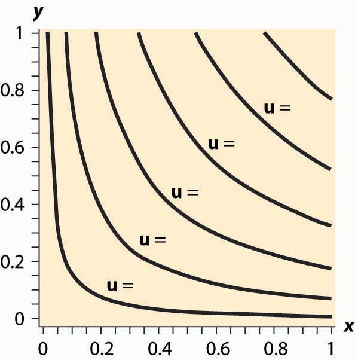
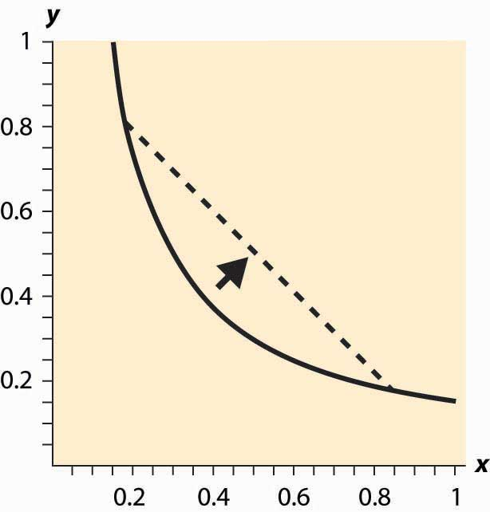
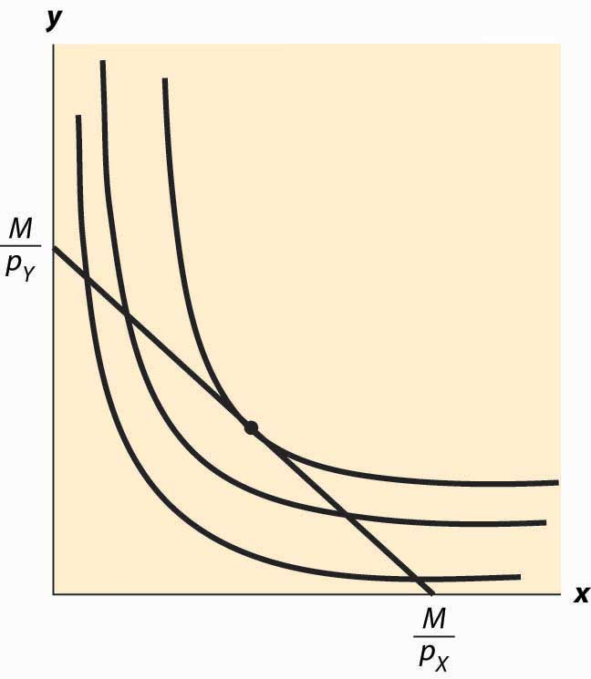
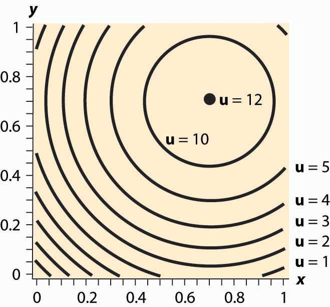
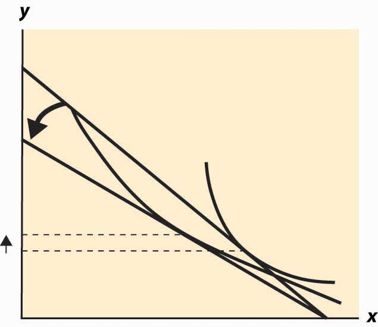
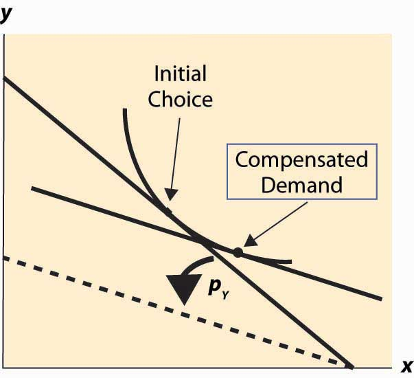
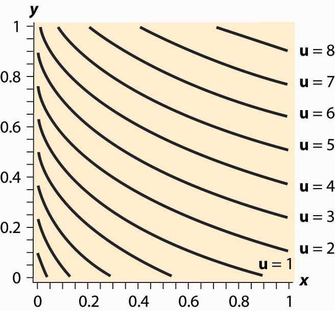

Consumer theory is to demand as producer theory is to supply. The major difference is that producer theory assumes that sellers are motivated by profit, and profit is something that one can usually directly measure. Moreover, the costs that enter into profit arise from physical properties of the production process—how many coffee cups come from the coffee-cup manufacturing plant? In contrast, consumer theory is based on what people like, so it begins with something that we can’t directly measure but must infer. That is, consumer theory is based on the premise that we can infer what people like from the choices they make.
Now, inferring what people like from the choices they make does not rule out mistakes. But our starting point is to consider the implications of a theory in which consumers don’t make mistakes, but make choices that give them the most satisfaction.
Economists think of this approach as analogous to studying gravitation in a vacuum before thinking about the effects of air friction. There is a practical consideration that dictates ignoring mistakes. There are many kinds of mistakes—for example, “I meant to buy toothpaste, but forgot and bought a toothbrush” (a memory problem); “I thought this toothpaste was better, but it is actually worse” (a learning issue); and “I meant to buy toothpaste, but I bought crack instead” (a self-control issue). All of these kinds of mistakes lead to distinct theories. Moreover, we can understand these alternative theories by understanding the basic theory first, and then we can see where the changes to these theories lead.
Economists use the term utility in a peculiar and idiosyncratic way. UtilityFlow of pleasure or happiness that a person enjoys. refers not to usefulness but to the flow of pleasure or happiness that a person enjoys—some measure of the satisfaction a person experiences. Usefulness might contribute to utility, but so does style, fashion, or even whimsy.
The term utility is unfortunate, not just because it suggests usefulness but because it makes the economic approach to behavior appear more limited than it actually is. We will make very few assumptions about the form of utility that a consumer might have. That is, we will attempt to avoid making value judgments about the preferences a consumer holds—whether he or she likes to smoke cigarettes or eat only carrots, watch Arnold Schwarzenegger movies, or spend time with a hula-hoop. Consumers like whatever it is that they like; the economic assumption is that they attempt to obtain the goods that they enjoy. It is the consequences of the pursuit of happiness that comprise the core of consumer theory.
In this chapter, we will focus on two goods. In many cases, the generalization to an arbitrary number of goods is straightforward. Moreover, in most applications it won’t matter because we can view one of the goods as a “composite good,” reflecting consumption of a bunch of other goods.Thus, for example, savings for future consumption, providing for descendants, or giving to your alma mater are all examples of consumption. Our consumer will, in the end, always spend all of his or her income, although this happens because we adopt a very broad notion of spending. In particular, savings are “future spending.”
As a starting point, suppose there are two goods, X and Y. To distinguish the quantity of the good from the good itself, we’ll use capital letters to indicate the good, and lowercase letters to indicate the quantity of that good that is consumed. If X is rutabagas, a consumer who ate three of them would have x = 3. How can we represent preferences for this consumer? To fix ideas, suppose the consumer is both hungry and thirsty, and the goods are pizza and beer. The consumer would like more of both, reflected in greater pleasure for greater consumption. Items that one might consume are generally known as “bundles,” as in bundles of goods and services, and less frequently as “tuples,” a short form for the “n-tuple,” meaning a list of n quantities. Since we will focus on two goods, both of these terms are strained in the application—a bundle because a bundle of two things isn’t much of a bundle, and a tuple because what we have here is a “two-tuple,” also known as a pair. But part of the job of studying economics is to learn the language of economics, so bundles it is.
One might naturally consider measuring utility on some kind of physical basis (production of dopamine in the brain, for example) but it turns out that the actual quantities of utility don’t matter for the theory we develop. What matters is whether a bundle produces more than another, less, or the same. Let u(x, y) represent the utility that a consumer gets from consuming x units of beer and y units of pizza. The function u guides the consumer’s choice in the sense that, if the consumer can choose either (x1, y1) or (x2, y2), we expect him to choose (x1, y1) if u(x1, y1) > u(x2, y2).
But notice that a doubling of u would lead to the same choices because
u(x1, y1) > u(x2, y2) if and only if 2u(x1, y1) > 2u(x2, y2).Thus, doubling the utility doesn’t change the preferences of the consumer. But the situation is more extreme than this. Even exponentiating the utility doesn’t change the consumer’s preferences because u(x1, y1) > u(x2, y2) if and only if .
In other words, there are no natural units for utility, at least until such time as we are able to measure pleasure in the brain.
It is possible to develop the theory of consumer choice without supposing that a utility function exists at all. However, it is expedient to begin with utility in order to simplify the analysis for introductory purposes.
Suppose that a consumer has a fixed amount of money to spend, M. There are two goods X and Y, with associated prices pX and pY. The feasible choices that the consumer can make satisfy In addition, we will focus on consumption and rule out negative consumption, so x ≥ 0 and y ≥ 0. This gives a budget setSet of goods a consumer can afford. or feasible set, as illustrated in Figure 12.1 "Budget set". The budget set is the set of goods a consumer can afford to purchase.
The budget lineSet of goods that just exhaust the consumer's budget. is the boundary of the budget set, and it consists of the goods that just exhaust the consumer’s budget
Figure 12.1 Budget set

In Figure 12.1 "Budget set", the feasible set of purchases that satisfies the budget constraint is illustrated with shading. If the consumer spends all of her money on X, she can consume the quantity x = Similarly, if she spends all of her money on Y, she consumes units of Y. The straight line between them, known as the budget line, represents the most of the goods that she can consume. The slope of the budget line is
An increase in the price of one good pivots or rotates the budget line. Thus, if the price of X increases, the endpoint remains the same, but falls. This is illustrated in Figure 12.2 "Effect of an increase in price on the budget".
Figure 12.2 Effect of an increase in price on the budget

The effect of increasing the available money M is to increase both and proportionately. This means that an increase in M shifts the budget line out (away from the origin) in a parallel fashion, as shown in Figure 12.3 "An increase in income".
Figure 12.3 An increase in income

An increase in both prices by the same proportional factor has an effect identical to a decrease in income. Thus, one of the three financial values—the two prices and income—is redundant. That is, we can trace out all of the possible budget lines with any two of the three parameters. This can prove useful. We can arbitrarily set pX to be the number one without affecting the generality of the analysis. When setting a price to one, that related good is called the numeraireA good used as a reference good, so that prices are denominated in units of that good., and essentially all prices are denominated with respect to that one good.
A real-world example of a numeraire occurred when the currency used was based on gold, so that the prices of other goods were denominated in terms of the value of gold.
Money is not necessarily the only constraint on the consumption of goods that a consumer faces. Time can be equally important. One can own all of the compact disks in the world, but they are useless if one doesn’t actually have time to listen to them. Indeed, when we consider the supply of labor, time will be a major issue—supplying labor (working) uses up time that could be used to consume goods. In this case, there will be two kinds of budget constraints—a financial one and a temporal one. At a fixed wage, time and money translate directly into one another, and the existence of the time constraint won’t present significant challenges to the theory. The conventional way to handle the time constraint is to use, as a baseline, working “full out,” and then to view leisure as a good that is purchased at a price equal to the wage. Thus, if you earn $20 an hour, we would set your budget at $480 a day, reflecting 24 hours of work; but we would then permit you to buy leisure time, during which eating, sleeping, brushing your teeth, and every other nonwork activity could be accomplished at a price equal to $20 per hour.
With two goods, we can graphically represent utility by considering the contour map of utility. Utility contours are known as isoquants, meaning “equal quantity,” and are also known as indifference curves, since the consumer is indifferent between points on the line. In other words an indifference curveThe set of goods that produce equal utility; also known as iso-utility curve., also known as an iso-utility curve, is the set of goods that produce equal utility.
We have encountered this idea already in the description of production functions, where the curves represented input mixes that produced a given output. The only difference here is that the output being produced is consumer “utility” instead of a single good or service.
Figure 12.4 Utility isoquants
Figure 12.4 "Utility isoquants" provides an illustration of isoquants, or indifference curves. Each curve represents one level of utility. Higher utilities occur to the northeast, farther away from the origin. As with production isoquants, the slope of the indifference curves has the interpretation of the trade-off between the two goods. The amount of Y that the consumer is willing to give up, in order to obtain an extra bit of X, is the slope of the indifference curve. Formally, the equation defines an indifference curve for the reference utility u0. Differentiating in such a way as to preserve the equality, we obtain the slope of the indifference curve:
or
This slope is known as the marginal rate of substitution and reflects the trade-off, from the consumer’s perspective, between the goods. That is to say, the marginal rate of substitution (of Y for X) is the amount of Y that the consumer is willing to lose in order to obtain an extra unit of X.
An important assumption concerning isoquants is reflected in the figure: “Midpoints are preferred to extreme points.” Suppose that the consumer is indifferent between (x1, y1) and (x2, y2); that is, u(x1, y1) = u(x2, y2). Then we can say that preferences are convex if any point on the line segment connecting (x1, y1) and (x2, y2) is at least as good as the extremes. Formally, a point on the line segment connecting (x1, y1) and (x2, y2) comes in the form (αx1 + (1 – α) x2, αy1 + (1 – α) y2), for α between zero and one. This is also known as a “convex combination” between the two points. When α is zero, the segment starts at (x2, y2) and proceeds in a linear fashion to (x1, y1) at α = 1. Preferences are convex if, for any α between 0 and 1, u(x1, y1) = u(x2, y2) implies u(αx1 + (1 – α) x2, (y1 + (1 – α) y2) ≥ u(x1, y1).
This property is illustrated in Figure 12.5 "Convex preferences". The line segment that connects two points on the indifference curve lies to the northeast of the indifference curve, which means that the line segment involves strictly more consumption of both goods than some points on the indifference curve. In other words, it is preferred to the indifference curve. Convex preferences mean that a consumer prefers a mix to any two equally valuable extremes. Thus, if the consumer likes black coffee and also likes drinking milk, then the consumer prefers some of each—not necessarily mixed—to only drinking coffee or only drinking milk. This sounds more reasonable if you think of the consumer’s choices on a monthly basis. If you like drinking 60 cups of coffee and no milk per month as much as you like drinking 30 glasses of milk and no coffee, convex preferences entail preferring 30 cups of coffee and 15 glasses of milk to either extreme.
Figure 12.5 Convex preferences
How does a consumer choose which bundle to select? The consumer is faced with the problem of maximizing u(x, y) subject to
We can derive the solution to the consumer’s problem as follows. First, “solve” the budget constraint for y, to obtain If Y is a good, this constraint will be satisfied with equality, and all of the money will be spent. Thus, we can write the consumer’s utility as
The first-order condition for this problem, maximizing it over x, has
This can be rearranged to obtain the marginal rate of substitution (MRS):
The marginal rate of substitution (MRS)The amount extra of one good needed to make up for a decrease in another good, staying on an indifference curve. is the extra amount of one good needed to make up for a decrease in another good, staying on an indifference curve
The first-order condition requires that the slope of the indifference curve equals the slope of the budget line; that is, there is a tangency between the indifference curve and the budget line. This is illustrated in Figure 12.6 "Graphical utility maximization". Three indifference curves are drawn, two of which intersect the budget line but are not tangent. At these intersections, it is possible to increase utility by moving “toward the center,” until the highest of the three indifference curves is reached. At this point, further increases in utility are not feasible, because there is no intersection between the set of bundles that produce a strictly higher utility and the budget set. Thus, the large black dot is the bundle that produces the highest utility for the consumer.
It will later prove useful to also state the second-order condition, although we won’t use this condition now:
Note that the vector is the gradient of u, and the gradient points in the direction of steepest ascent of the function u. Second, the equation that characterizes the optimum,
Figure 12.6 Graphical utility maximization
where • is the “dot product” that multiplies the components of vectors and then adds them, says that the vectors (u1, u2) and (–pY, pX) are perpendicular and, hence, that the rate of steepest ascent of the utility function is perpendicular to the budget line.
When does this tangency approach fail to solve the consumer’s problem? There are three ways that it can fail. First, the utility might not be differentiable. We will set aside this kind of failure with the remark that fixing points of nondifferentiability is mathematically challenging but doesn’t lead to significant alterations in the theory. The second failure is that a tangency doesn’t maximize utility. Figure 12.7 "“Concave” preferences: Prefer boundaries" illustrates this case. Here there is a tangency, but it doesn’t maximize utility. In Figure 12.7 "“Concave” preferences: Prefer boundaries" , the dotted indifference curve maximizes utility given the budget constraint (straight line). This is exactly the kind of failure that is ruled out by convex preferences. In Figure 12.7 "“Concave” preferences: Prefer boundaries", preferences are not convex because, if we connect two points on the indifference curves and look at a convex combination, we get something less preferred, with lower utility—not more preferred as convex preferences would require.
Figure 12.7 “Concave” preferences: Prefer boundaries

The third failure is more fundamental: The derivative might fail to be zero because we’ve hit the boundary of x = 0 or y = 0. This is a fundamental problem because, in fact, there are many goods that we do buy zero of, so zeros for some goods are not uncommon solutions to the problem of maximizing utility. We will take this problem up in a separate section, but we already have a major tool to deal with it: convex preferences. As we shall see, convex preferences ensure that the consumer’s maximization problem is “well behaved.”
The Cobb-Douglas utility function comes in the form Since utility is zero if either of the goods is zero, we see that a consumer with Cobb-Douglas preferences will always buy some of each good. The marginal rate of substitution for Cobb-Douglas utility is
Thus, the consumer’s utility maximization problem yields
Thus, using the budget constraint, This yields
The Cobb-Douglas utility results in constant expenditure shares. No matter what the price of X or Y, the expenditure xpX on X is αM. Similarly, the expenditure on Y is (1 – α)M. This makes the Cobb-Douglas utility very useful for computing examples and homework exercises.
When two goods are perfect complements, they are consumed proportionately. The utility that gives rise to perfect complements is in the form u(x, y) = min {x, βy} for some constant β (the Greek letter “beta”). First observe that, with perfect complements, consumers will buy in such a way that x = βy. The reason is that, if x > βy, some expenditure on x is a waste since it brings in no additional utility; and the consumer gets higher utility by decreasing x and increasing y. This lets us define a “composite good” that involves buying some amount y of Y and also buying βy of X. The price of this composite commodity is βpX + pY, and it produces utility In this way, perfect complements boil down to a single good problem.
If the only two goods available in the world were pizza and beer, it is likely that satiationThe point at which increased consumption does not increase utility.—the point at which increased consumption does not increase utility—would set in at some point. How many pizzas can you eat per month? How much beer can you drink? (Don’t answer that.)
Figure 12.8 Isoquants for a bliss point
What does satiation mean for isoquants? It means there is a point that maximizes utility, which economists call a bliss pointA point that maximizes utility.. An example is illustrated in Figure 12.8 "Isoquants for a bliss point". Near the origin, the isoquants behave as before. However, as one gets full of pizza and beer, a point of maximum value is reached, illustrated by a large black dot. What does satiation mean for the theory? First, if the bliss point isn’t within reach, the theory behaves as before. With a bliss point within reach, consumption will stop at the bliss point. A feasible bliss point entails having a zero value of money. There may be people with a zero value of money, but even very wealthy people, who reach satiation in goods that they personally consume, often like to do other things with the wealth and appear not to have reached satiation overall.
It would be a simpler world if an increase in the price of a good always entailed buying less of it. Alas, it isn’t so, as Figure 12.9 "Substitution with an increase in price" illustrates. In this figure, an increase in the price of Y causes the budget line to pivot around the intersection on the x-axis, since the amount of X that can be purchased hasn’t changed. In this case, the quantity y of Y demanded rises.
Figure 12.9 Substitution with an increase in price
At first glance, this increase in the consumption of a good in response to a price increase sounds implausible, but there are examples where it makes sense. The primary example is leisure. As wages rise, the cost of leisure (forgone wages) rises. But as people feel wealthier, they choose to work fewer hours. The other examples given, which are hotly debated in the “tempest in a teapot” kind of way, involve people subsisting on a good like potatoes but occasionally buying meat. When the price of potatoes rises, they can no longer afford meat and buy even more potatoes than before.
Thus, the logical starting point on substitution—what happens to the demand for a good when the price of that good increases—does not lead to a useful theory. As a result, economists have devised an alternative approach based on the following logic. An increase in the price of a good is really a composition of two effects: an increase in the relative price of the good and a decrease in the purchasing power of money. As a result, it is useful to examine these two effects separately. The substitution effectThe effect on consumption of a change in the relative price, with a sufficient change in income to keep the consumer on the same utility isoquant. considers the change in the relative price, with a sufficient change in income to keep the consumer on the same utility isoquant.Some authors instead change the income enough to make the old bundle affordable. This approach has the virtue of being readily computed, but the disadvantage is that the substitution effect winds up increasing the utility of the consumer. Overall the present approach is more economical for most purposes. The income effect changes only income.
Figure 12.10 Substitution effect
To graphically illustrate the substitution effect, consider Figure 12.10 "Substitution effect". The starting point is the tangency between the isoquant and the budget line, denoted with a diamond shape and labeled “Initial Choice.” The price of Y rises, pivoting the budget line inward. The new budget line is illustrated with a heavy, dashed line. To find the substitution effect, increase income from the dashed line until the original isoquant is reached. Increases in income shift the budget line out in a fashion parallel to the original. We reach the original isoquant at a point labeled with a small circle, a point sometimes called the compensated demandDemand that exists when a change in price is accompanied by just enough additional income to keep utility the same. because we have compensated the consumer for the price increase by increasing income just enough to leave her unharmed, on the same isoquant. The substitution effect is just the difference between these points—the substitution in response to the price change, holding constant the utility of the consumer.
We can readily see that the substitution effect of a price increase in Y is to decrease the consumption of Y and increase the consumption of X.To construct a formal proof, first show that if pY rises and y rises, holding utility constant, the initial choice prior to the price increase is feasible after the price increase. Use this to conclude that, after the price increase, it is possible to have strictly more of both goods, contradicting the hypothesis that utility was held constant. The income effectThe effect on consumption of a change in income. is the change in consumption resulting from the change in income. The effect of any change in price can be decomposed into the substitution effect, which holds utility constant while changing and the income effect, which adjusts for the loss of purchasing power arising from the price increase.
Example (Cobb-Douglas): Recall that the Cobb-Douglas utility comes in the form Solving for x, y we obtain
and
Thus, consider a multiplicative increase Δ in pY—that is, multiplying pY by Δ > 1. In order to leave the utility constant, M must rise by Δ1 –α. Thus, x rises by the factor Δ1 –α and y falls by the factor Δ–α < 1. This is the substitution effect.
What is the substitution effect of a small change in the price pY for any given utility function, not necessarily Cobb-Douglas? To address this question, it is helpful to introduce some notation. We will subscript the utility to indicate partial derivative; that is,
Note that, by the definition of the substitution effect, we are holding the utility constant, so u(x, y) is being held constant. This means, locally, that Writing dx for an unknown infinitesimal change in x can be put on a formal basis. The easiest way to do so is to think of dx as representing the derivative of x with respect to a parameter, which will be pY.
In addition, we have so
Finally, we have the optimality condition which is convenient to write as Differentiating this equation, and letting we have
For a given dpY, we now have three equations in three unknowns: dx, dy, and dM. However, dM only appears in one of the three. Thus, the effect of a price change on x and y can be solved by solving two equations: and for the two unknowns, dx and dy. This is straightforward and yields
These equations imply that x rises and y falls.This is a consequence of the fact that which follows from the already stated second-order condition for a maximum of utility. We immediately see that
Thus, the change in (x, y) follows the budget line locally. (This is purely a consequence of holding utility constant.)
To complete the thought while we are embroiled in these derivatives, note that implies that
Thus, the amount of money necessary to compensate the consumer for the price increase, keeping utility constant, can be calculated from our third equation:
The amount of income necessary to ensure that the consumer makes no losses from a price increase in Y is the amount that lets him or her buy the bundle that he or she originally purchased; that is, the increase in the amount of money is precisely the amount needed to cover the increased price of y. This shows that locally there is no difference between a substitution effect that keeps utility constant (which is what we explored) and one that provides sufficient income to permit purchasing the previously purchased consumption bundle, at least when small changes in prices are contemplated.
Wealthy people buy more caviar than poor people. Wealthier people buy more land, medical services, cars, telephones, and computers than poorer people because they have more money to spend on goods and services and, overall, buy more of them. But wealthier people also buy fewer of some goods, too. Rich people buy fewer cigarettes and processed cheese foods. You don’t see billionaires waiting in line at McDonald’s, and that probably isn’t because they have an assistant to wait in line for them. For most goods, at a sufficiently high income, the purchase tends to trail off as income rises.
When an increase in income causes a consumer to buy more of a good, that good is called a normal good for that consumer. When the consumer buys less, the good is called an inferior good, which is an example of sensible jargon that is rare in any discipline. That is, an inferior good is any good whose quantity demanded falls as income rises. At a sufficiently low income, almost all goods are normal goods, while at a sufficiently high income, most goods become inferior. Even a Ferrari is an inferior good against some alternatives, such as Lear jets.
The curve that shows the path of consumption as income changes, holding prices constant, is known as an Engel curveGraph that shows the path of consumption as income changes, holding prices constant..The Engel curve is named for Ernst Engel (1821–1896), a statistician—not for Friedrich Engels, who wrote with Karl Marx. An Engel curve graphs (x(M), y(M)) as M varies, where x(M) is the amount of X chosen with income M, and similarly y(M) is the amount of Y. An example of an Engel curve is illustrated in Figure 12.11 "Engel curve".
Figure 12.11 Engel curve

Example (Cobb-Douglas): Since the equations define the optimal consumption, the Engel curve is a straight line through the origin with slope
An inferior good will see the quantity fall as income rises. Note that, with two goods, at least one is a normal good—they can’t both be inferior goods because otherwise, when income rises, less of both would be purchased. An example of an inferior good is illustrated in Figure 12.12 "Backward bending—inferior good". Here, as income rises, the consumption of x rises, reaches a maximum, and then begins to decline. In the declining portion, X is an inferior good.
The definition of the substitution effect now permits us to decompose the effect of a price change into a substitution effect and an income effect. This is illustrated in Figure 12.13 "Income and substitution effects".
What is the mathematical form of the income effect? This is actually more straightforward to compute than the substitution effect computed above. As with the substitution effect, we differentiate the conditions and holding pX and pY constant, to obtain and
Figure 12.12 Backward bending—inferior good

Figure 12.13 Income and substitution effects

The second condition can also be written as
This equation alone defines the slope of the Engel curve without determining how large a change arises from a given change in M. The two conditions together can be solved for the effects of M on X and Y. The Engel curve is given by
and
Note (from the second-order condition) that good Y is inferior if or if or is increasing in x. Since is locally constant when M increases, equaling the price ratio, and an increase in y increases (thanks to the second-order condition), the only way to keep equal to the price ratio is for x to fall. This property characterizes an inferior good—an increase in the quantity of the good increases the marginal rate of substitution of that good for another good.
Let us revisit the maximization problem considered in this chapter to provide conditions under which local maximization is global. The consumer can spend M on either or both of two goods. This yields a payoff of When is this problem well behaved? First, if h is a concave function of x, which implies The definition of concavity is such that h is concave if 0 < a < 1 and for all x, y, h(ax + (1 – a)y) ≥ ah(x) + (1 – a)h(y). It is reasonably straightforward to show that this implies the second derivative of h is negative; and if h is twice differentiable, the converse is true as well. then any solution to the first-order condition is, in fact, a maximum. To see this, note that entails is decreasing. Moreover, if the point x* satisfies then for x ≤ x*, and for x ≥ x*, because gets smaller as x gets larger, and Now consider x ≤ x*. Since h is increasing as x gets larger. Similarly, for x ≥ x*, which means that h gets smaller as x gets larger. Thus, h is concave and means that h is maximized at x*.
Thus, a sufficient condition for the first-order condition to characterize the maximum of utility is that for all x, pX, pY, and M. Letting this is equivalent to for all z > 0.
In turn, we can see that this requires (i) u11 ≤ 0 (z = 0), (ii) u22 ≤ 0 (z→∞), and (iii) In addition, since
(i), (ii), and (iii) are sufficient for
Therefore, if (i) u11 ≤ 0, (ii) u22 ≤ 0, and (iii) a solution to the first-order conditions characterizes utility maximization for the consumer.
When will a consumer specialize and consume zero of a good? A necessary condition for the choice of x to be zero is that the consumer doesn’t benefit from consuming a very small x; that is, This means that
or
Moreover, if the concavity of h is met, as assumed above, then this condition is sufficient to guarantee that the solution is zero. To see this, note that concavity of h implies is decreasing. Combined with this entails that h is maximized at 0. An important class of examples of this behavior is quasilinear utility. Quasilinear utility comes in the form u(x, y) = y + v(x), where v is a concave function ( for all x). That is, quasilinear utilityUtility that is additively separable. is utility that is additively separable.
Figure 12.14 Quasilinear isoquants
The procedure for dealing with corners is generally this. First, check concavity of the h function. If h is concave, we have a procedure to solve the problem; when h is not concave, an alternative strategy must be devised. There are known strategies for some cases that are beyond the scope of this text. Given h concave, the next step is to check the endpoints and verify that (for otherwise x = 0 maximizes the consumer’s utility) and (for otherwise y = 0 maximizes the consumer’s utility). Finally, at this point we seek the interior solution With this procedure, we can ensure that we find the actual maximum for the consumer rather than a solution to the first-order conditions that don’t maximize the consumer’s utility.